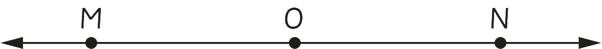

Activity 4: Drawing a straight line
1. Use a ruler to draw two rays, one pointing towards the left and the other towards the right.
2. Connect the initial points of the two rays in task 1 to get a straight line.
Exercise 2
1.
Draw and label two line segments.
2.
Draw and label three straight lines.
3.
State the difference between a straight line and a line segment.
4.
Can you draw a 4 cm line segment without a ruler?
Give reasons.
5.
Draw rays XY and YX.
6.
Give the difference between a line segment and a ray.
7.
Which instrument can be used to measure a line segment of length 5 cm?
8.
Determine the number of line segments in the following line.

MON
9.
Draw a line segment PQ and state the name of the end points.
10.
Join three line segments AB, BC, and CA.
Then, state the name of the figure formed.